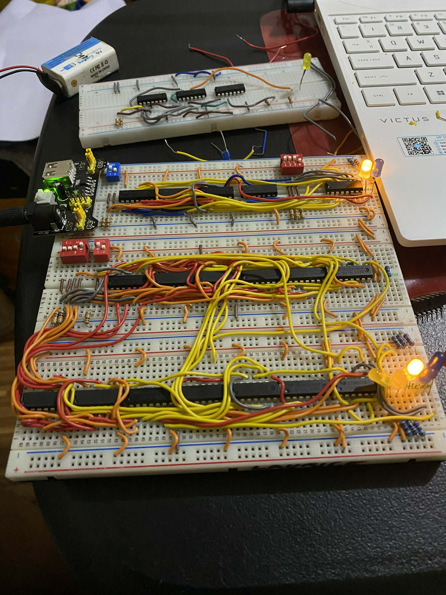
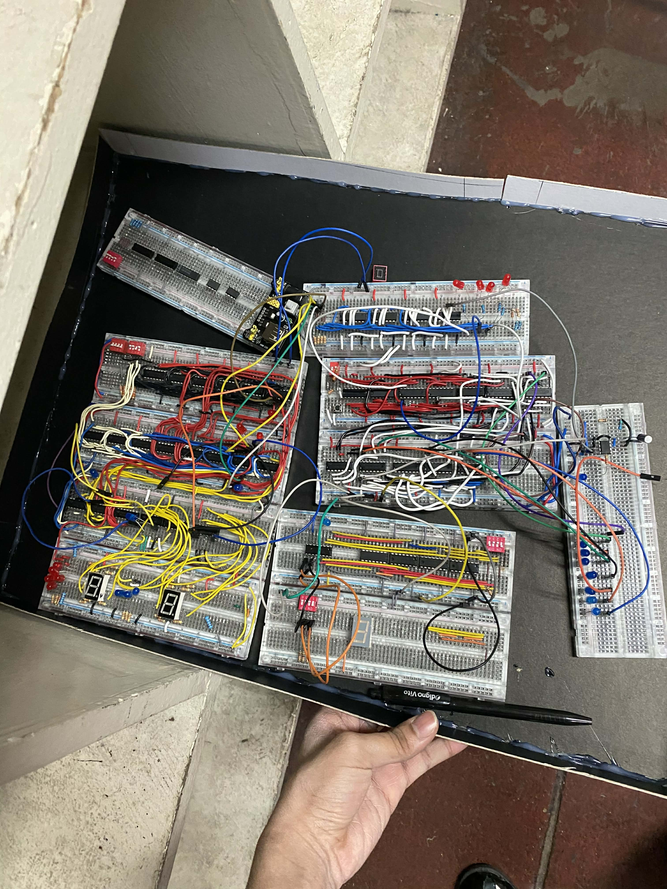

2-Bit Calculator

View 1

View 2

View 3


This is a 4-Bit Computer Architeure System which made of basic logic gates. It consist of 4 subsystem which includes 2-Bit Calculator, 8-Bit Multiplexer, Register, and a 16-Bit Binary Counter which all subsystems connected to each other. This is your most complex build a modular "mini-computer." By connecting a 2-Bit Calculator (for math), an 8-Bit Multiplexer (for data routing), a Register (for temporary memory), and a 16-Bit Binary Counter (to track steps or addresses), you’ve created a physical representation of how a CPU processes information.